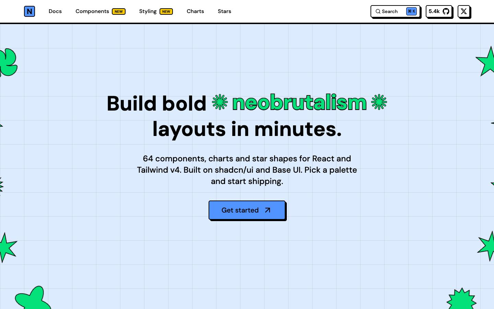

References / Website / 56
Neobrutalism components website
The documentation site of an open-source neo-brutalist component library, styled with its own components.
- Source
- neobrutalism.dev
- Creator
- Samuel Breznjak
- Made
- 2023–present
- Style
- Neo-brutalism (agent-proposed, not yet reviewed by a person)
- Moods
- Playful, direct, bright
- Evidence
- Captured with
tools/capture.mjs(headless Chrome, 1440 × 900) on 25 September 2026 and inspected. The screenshot shows the first viewport; the measurement covers up to four screens. - Reviewed
- Rights
- Third-party work, stored with credit for commentary. License: unverified. Rights policy
Observed
- A pale blue page carries a thin blue-gray grid pattern.
- The navigation bar ends in a thick black rule. Search, GitHub, and X buttons have black outlines and hard black shadows.
- The centered headline is heavy geometric sans-serif, with “neobrutalism” in bright green with a black outline, framed by outlined asterisk shapes.
- The single call to action is a blue button with a black outline and a solid black shadow offset down and right.
- Outlined green stars and blobs in several shapes are scattered around the edges.
Why it belongs
The site is the component library applied to itself, so it shows the grammar at page scale: outline, hard shadow, flat bright fill. Most of the page area is pale, and the brights are accents.
Borrow
Put the brights on small elements and keep the ground pale. Give every clickable element the same outline and shadow.
Measured
Machine-extracted by tools/extract-traits.js on . Full measurement.
- Type families
- DM Sans (100%)
- Type scale ratio
- 2.5
- Median radius
- 5 px
- Mean chroma
- 0.11
- Palette
- #dcebfe 74%
- #000000 16%
- #ffffff 8%
- #05e17a 1%
- #5294ff 1%

